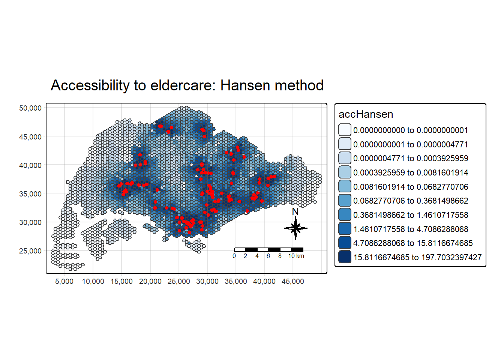

pacman::p_load(tmap, SpatialAcc, sf,
ggstatsplot, reshape2,
tidyverse)Hands-on Exercise 9: Modelling Geographical Accessibility
9.1 Introduction
This hands-on exercise is about how to model geographical accessibility by using R’s geospatial analysis packages.
9.1.1 Learning Outcome
to computer accessibility measure by using Hansen’s potential model and Spatial Accessibility Measure (SAM); and
to visualise the accessibility measures by using tmap and ggplot2 packages.
9.2 Data
Four data sets will be used in this hands-on exercise, they are:
MP14_SUBZONE_NO_SEA_PL: URA Master Plan 2014 subzone boundary GIS data. This data set is downloaded from data.gov.sg.hexagons: A 250m radius hexagons GIS data. This data set was created by using st_make_grid() of sf package. It is in ESRI shapefile format.ELDERCARE: GIS data showing location of eldercare service. This data is downloaded from data.gov.sg. There are two versions. One in ESRI shapefile format. The other one in Google kml file format. For the purpose of this hands-on exercise, ESRI shapefile format is provided.OD_Matrix: a distance matrix in csv format. There are six fields in the data file.
9.3 Getting Started
9.4 Geospatial Data Wrangling
9.4.1 Importing geospatial data
mpsz <- st_read(dsn = "data/geospatial", layer = "MP14_SUBZONE_NO_SEA_PL")Reading layer `MP14_SUBZONE_NO_SEA_PL' from data source
`C:\ppthaw2024\ISSS626-Geospatial\In_Class_Ex\In_Class_Ex09\data\geospatial'
using driver `ESRI Shapefile'
Simple feature collection with 323 features and 15 fields
Geometry type: MULTIPOLYGON
Dimension: XY
Bounding box: xmin: 2667.538 ymin: 15748.72 xmax: 56396.44 ymax: 50256.33
Projected CRS: SVY21hexagons <- st_read(dsn = "data/geospatial", layer = "hexagons") Reading layer `hexagons' from data source
`C:\ppthaw2024\ISSS626-Geospatial\In_Class_Ex\In_Class_Ex09\data\geospatial'
using driver `ESRI Shapefile'
Simple feature collection with 3125 features and 6 fields
Geometry type: POLYGON
Dimension: XY
Bounding box: xmin: 2667.538 ymin: 21506.33 xmax: 50010.26 ymax: 50256.33
Projected CRS: SVY21 / Singapore TMeldercare <- st_read(dsn = "data/geospatial", layer = "ELDERCARE") Reading layer `ELDERCARE' from data source
`C:\ppthaw2024\ISSS626-Geospatial\In_Class_Ex\In_Class_Ex09\data\geospatial'
using driver `ESRI Shapefile'
Simple feature collection with 120 features and 19 fields
Geometry type: POINT
Dimension: XY
Bounding box: xmin: 14481.92 ymin: 28218.43 xmax: 41665.14 ymax: 46804.9
Projected CRS: SVY21 / Singapore TM9.4.2 Updating CRS information
mpsz <- st_transform(mpsz, 3414)
eldercare <- st_transform(eldercare, 3414)
hexagons <- st_transform(hexagons, 3414)st_crs(mpsz)Coordinate Reference System:
User input: EPSG:3414
wkt:
PROJCRS["SVY21 / Singapore TM",
BASEGEOGCRS["SVY21",
DATUM["SVY21",
ELLIPSOID["WGS 84",6378137,298.257223563,
LENGTHUNIT["metre",1]]],
PRIMEM["Greenwich",0,
ANGLEUNIT["degree",0.0174532925199433]],
ID["EPSG",4757]],
CONVERSION["Singapore Transverse Mercator",
METHOD["Transverse Mercator",
ID["EPSG",9807]],
PARAMETER["Latitude of natural origin",1.36666666666667,
ANGLEUNIT["degree",0.0174532925199433],
ID["EPSG",8801]],
PARAMETER["Longitude of natural origin",103.833333333333,
ANGLEUNIT["degree",0.0174532925199433],
ID["EPSG",8802]],
PARAMETER["Scale factor at natural origin",1,
SCALEUNIT["unity",1],
ID["EPSG",8805]],
PARAMETER["False easting",28001.642,
LENGTHUNIT["metre",1],
ID["EPSG",8806]],
PARAMETER["False northing",38744.572,
LENGTHUNIT["metre",1],
ID["EPSG",8807]]],
CS[Cartesian,2],
AXIS["northing (N)",north,
ORDER[1],
LENGTHUNIT["metre",1]],
AXIS["easting (E)",east,
ORDER[2],
LENGTHUNIT["metre",1]],
USAGE[
SCOPE["Cadastre, engineering survey, topographic mapping."],
AREA["Singapore - onshore and offshore."],
BBOX[1.13,103.59,1.47,104.07]],
ID["EPSG",3414]]9.4.3 Cleaning and updating attribute fields of the geospatial data
eldercare <- eldercare %>%
select(fid, ADDRESSPOS) %>%
mutate(capacity = 100)hexagons <- hexagons %>%
select(fid) %>%
mutate(demand = 100)9.5 Apsaital Data Handling and Wrangling
9.5.1 Importing Distance Matrix
ODMatrix <- read_csv("data/aspatial/OD_Matrix.csv", skip = 0)9.5.2 Tidying distance matrix
The code chunk below uses spread() of tidyr package is used to transform the O-D matrix from a thin format into a fat format.
distmat <- ODMatrix %>%
select(origin_id, destination_id, total_cost) %>%
spread(destination_id, total_cost)%>%
select(c(-c('origin_id')))Currently, the distance is measured in metre because SVY21 projected coordinate system is used. The code chunk below will be used to convert the unit f measurement from metre to kilometre.
distmat_km <- as.matrix(distmat/1000)9.6 Modelling and Visualising Accessibility using Hansen Method
9.6.1 Computing Hansen’s accessibility
The code chunk below calculates Hansen’s accessibility using ac() of SpatialAcc and data.frame() is used to save the output in a data frame called acc_Handsen.
library(SpatialAcc)
D <- distmat_km
if (inherits(D, "units")) D <- units::drop_units(D)
D <- as.matrix(D)
stopifnot(length(hexagons$demand) == nrow(D)) # origins
stopifnot(length(eldercare$capacity) == ncol(D)) # destinations
acc_Hansen <- SpatialAcc::ac(
p = hexagons$demand, # demand (unused by Hansen but required)
n = eldercare$capacity, # supply
D = D, # distance matrix
d0 = max(D, na.rm = TRUE), # dummy; Hansen ignores d0
power = 2,
family = "Hansen"
)acc_Hansen <- as.matrix(acc_Hansen)
colnames(acc_Hansen) <- "accHansen"acc_Hansen <- as_tibble(acc_Hansen)hexagon_Hansen <- bind_cols(hexagons, acc_Hansen)one step only
In-Class Exercise 9
Trying with power =0.5 to 2.5
D <- distmat_km
if (inherits(D, "units")) D <- units::drop_units(D)
D <- as.matrix(D)
stopifnot(length(hexagons$demand) == nrow(D)) # origins
stopifnot(length(eldercare$capacity) == ncol(D)) # destinations
acc_Hansen0.5 <- SpatialAcc::ac(
p = hexagons$demand, # demand (unused by Hansen but required)
n = eldercare$capacity, # supply
D = D, # distance matrix
d0 = max(D, na.rm = TRUE), # dummy; Hansen ignores d0
power = 0.5,
family = "Hansen"
)acc_Hansen0.5 <- as.matrix(acc_Hansen0.5)
colnames(acc_Hansen0.5) <- "accHansen0.5"acc_Hansen0.5 <- as_tibble(acc_Hansen0.5)hexagon_Hansen0.5 <- bind_cols(hexagons, acc_Hansen0.5)D <- distmat_km
if (inherits(D, "units")) D <- units::drop_units(D)
D <- as.matrix(D)
stopifnot(length(hexagons$demand) == nrow(D)) # origins
stopifnot(length(eldercare$capacity) == ncol(D)) # destinations
acc_Hansen1 <- SpatialAcc::ac(
p = hexagons$demand, # demand (unused by Hansen but required)
n = eldercare$capacity, # supply
D = D, # distance matrix
d0 = max(D, na.rm = TRUE), # dummy; Hansen ignores d0
power = 1,
family = "Hansen"
)acc_Hansen1 <- as.matrix(acc_Hansen1)
colnames(acc_Hansen1) <- "accHansen1"acc_Hansen1 <- as_tibble(acc_Hansen1)hexagon_Hansen1 <- bind_cols(hexagons, acc_Hansen1)D <- distmat_km
if (inherits(D, "units")) D <- units::drop_units(D)
D <- as.matrix(D)
stopifnot(length(hexagons$demand) == nrow(D)) # origins
stopifnot(length(eldercare$capacity) == ncol(D)) # destinations
acc_Hansen1.5 <- SpatialAcc::ac(
p = hexagons$demand, # demand (unused by Hansen but required)
n = eldercare$capacity, # supply
D = D, # distance matrix
d0 = max(D, na.rm = TRUE), # dummy; Hansen ignores d0
power = 1.5,
family = "Hansen"
)acc_Hansen1.5 <- as.matrix(acc_Hansen1.5)
colnames(acc_Hansen1.5) <- "accHansen1.5"acc_Hansen1.5 <- as_tibble(acc_Hansen1.5)hexagon_Hansen1.5 <- bind_cols(hexagons, acc_Hansen1.5)D <- distmat_km
if (inherits(D, "units")) D <- units::drop_units(D)
D <- as.matrix(D)
stopifnot(length(hexagons$demand) == nrow(D)) # origins
stopifnot(length(eldercare$capacity) == ncol(D)) # destinations
acc_Hansen2 <- SpatialAcc::ac(
p = hexagons$demand, # demand (unused by Hansen but required)
n = eldercare$capacity, # supply
D = D, # distance matrix
d0 = max(D, na.rm = TRUE), # dummy; Hansen ignores d0
power = 2,
family = "Hansen"
)acc_Hansen2 <- as.matrix(acc_Hansen2)
colnames(acc_Hansen2) <- "accHansen2"acc_Hansen2 <- as_tibble(acc_Hansen2)hexagon_Hansen2 <- bind_cols(hexagons, acc_Hansen2)D <- distmat_km
if (inherits(D, "units")) D <- units::drop_units(D)
D <- as.matrix(D)
stopifnot(length(hexagons$demand) == nrow(D)) # origins
stopifnot(length(eldercare$capacity) == ncol(D)) # destinations
acc_Hansen2.5 <- SpatialAcc::ac(
p = hexagons$demand, # demand (unused by Hansen but required)
n = eldercare$capacity, # supply
D = D, # distance matrix
d0 = max(D, na.rm = TRUE), # dummy; Hansen ignores d0
power = 2.5,
family = "Hansen"
)acc_Hansen2.5 <- as.matrix(acc_Hansen2.5)
colnames(acc_Hansen2.5) <- "accHansen2.5"acc_Hansen2.5 <- as_tibble(acc_Hansen2.5)hexagon_Hansen2.5 <- bind_cols(hexagons, acc_Hansen2.5)9.6.2 Visualising Hansen’s accessibility
Extracting map extend
Firstly, we will extract the extend of hexagons simple feature data frame by by using st_bbox() of sf package.
mapex <- st_bbox(hexagons)The code chunk below uses a collection of mapping fucntions of tmap package to create a high cartographic quality accessibility to eldercare centre in Singapore.
tm_shape(hexagon_Hansen,
bbox = mapex) +
tm_polygons(fill = "accHansen",
fill.scale = tm_scale_intervals(
style = "quantile",
n = 10,
values = "brewer.blues")) +
tm_shape(eldercare) +
tm_dots(size = 0.3,
fill = "red",
col = "black") +
tm_title("Accessibility to eldercare: Hansen method") +
tm_layout(frame = TRUE) +
tm_compass(type="8star", size = 2) +
tm_scalebar() +
tm_grid(alpha = 0.2)